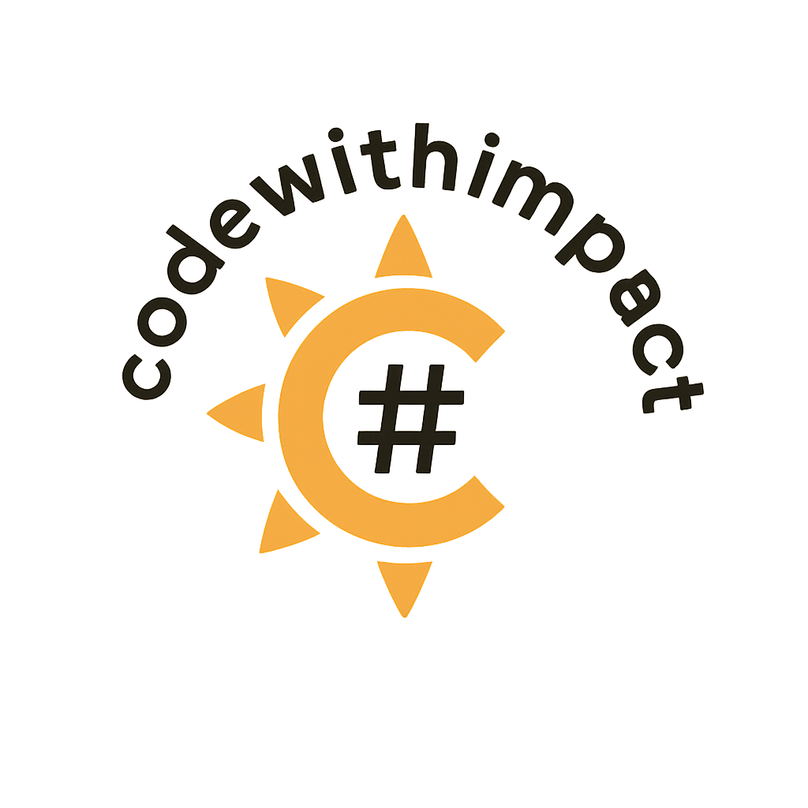

Our Purpose
We believe technical talent can create real social impact when connected to meaningful healthcare challenges.

Partner With UsCode With Impact brings together skilled volunteers and healthcare teams to deliver practical data, analytics and AI support.
Code With Impact is currently powered by eight volunteers, including the founder, working together to support healthcare and research projects with data, analytics and AI expertise.
We believe technical talent can create real social impact when connected to meaningful healthcare challenges.
Practical impact, ethical AI, transparency, collaboration and respect for healthcare expertise.
Our volunteers come from data, analytics, modelling, engineering and technology roles across industries, and bring those skills into healthcare and research projects through Code With Impact.
Simona founded Code With Impact during her father's illness with bulbar-onset Motor Neurone Disease and frontotemporal dementia. She brings more than 10 years of quantitative analytics experience and created the initiative to turn personal helplessness into practical action by connecting data professionals with healthcare researchers who need support.
View LinkedInCaitlin brings around four years of quantitative analytics experience across Python, SAS and SQL. With a mathematics background and a strong interest in meaningful problem-solving, she joined to apply her technical skills to real-world healthcare challenges.
View LinkedInJulian has more than 25 years of experience across IT development, analysis and management roles in three countries. He joined Code With Impact to use that experience in service of the community and to help grow a collaborative, purpose-driven volunteer network.
View LinkedInAnna is a Senior Risk Analyst in finance with a passion for coding, analysis and making a practical difference. After her father was diagnosed with MND, she joined to support research into rare diseases and contribute her skills where they can help others.
View LinkedInYolanda has spent a decade working in quantitative analysis, with expertise in advanced data analysis and modelling. She studied Computer Science before completing a Master’s degree in Quantitative Finance, and is passionate about applying data-driven insights to real-world challenges. Having lost her father to cancer, she is keen to use her skills to support medical research and help advance work that can make a meaningful difference to patients and their families.
View LinkedInAnfal studied Biochemical Engineering and has worked with both the NHS and the pharmaceutical industry before moving into AI in banking. She joined Code With Impact to help close the technical skills gap in healthcare and research and improve patient outcomes.
View LinkedInAdrian studied Mathematics and Computer Science and has spent the past nine years in credit risk for international institutions. He brings model thinking, governance and analytical clarity, with a strong personal interest in work connected to cancer research and neurodegenerative disease.
Jon brings 24 years of experience in finance, mostly in modelling teams, along with a strong focus on collaborative problem-solving and leadership. He joined to use modern analytical tools alongside others who want to create meaningful, data-driven impact in healthcare.
View LinkedIn